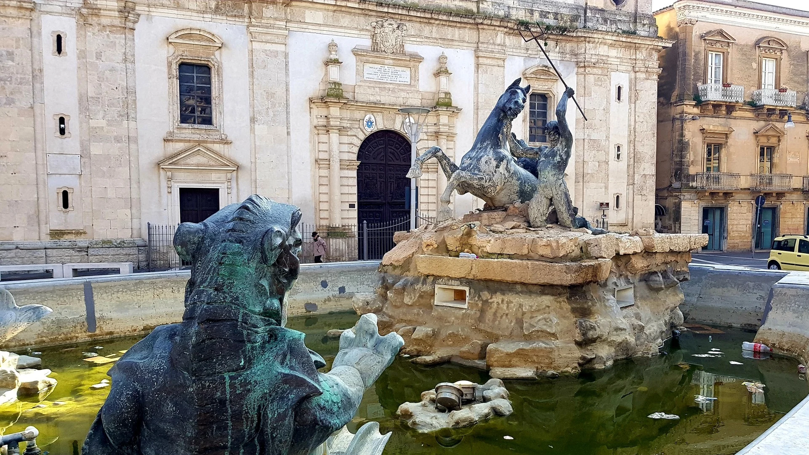

FONTANA DEL TRITONE
Il simbolo della città
Innalzata al centro esatto della piazza nel 1956, la fontana ospita il gruppo scultoreo in bronzo realizzato dall'artista nisseno Michele Tripisciano. L'opera, ispirata alla mitologia, raffigura un possente Tritone nell'atto di domare un mostro marino, affiancato da due cavalli marini, e rappresenta la forza e la rinascita della città.